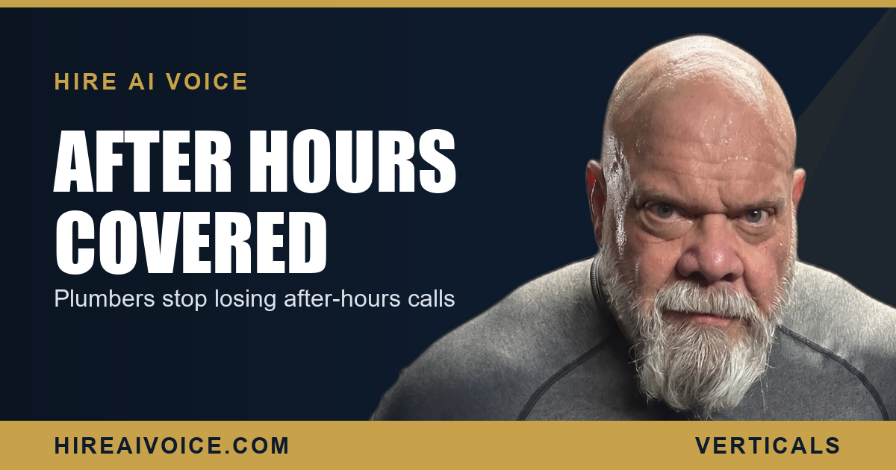

Plumbers: Stop Losing After-Hours Emergency Calls

The Short Version
- Plumbing emergencies happen at night and on weekends. Your biggest jobs come in when your office is closed.
- A burst pipe at 2 AM does not wait. It rolls to voicemail, the homeowner hangs up, and they call the next plumber on the list.
- You do not lose those jobs on price. You lose them because nobody answered.
- A 24/7 AI voice agent answers every call, triages the true emergencies, books them, and texts your on-call tech the address.
- Missed-call text-back is the safety net underneath it, so no after-hours call ever goes cold.
Why Do Plumbers Lose So Many After-Hours Calls?
Because the highest-value jobs come in when nobody is at the phone. A slow drain calls during business hours. A burst pipe spraying water into a hallway calls at 11 PM on a Saturday. The emergencies that pay the most and book the fastest almost never happen between 9 and 5, and that is exactly when your office is dark.
So the call rolls to voicemail. The homeowner is standing in two inches of water, panicking, and they are not leaving a calm message and waiting until Monday. They hang up and dial the next plumber. Whoever picks up gets the job. You never even knew the call came in.
What Does an After-Hours Emergency Actually Cost You?
One missed burst pipe is the most expensive call you will ever not answer. Emergency plumbing jobs carry your highest tickets, and the customer in that moment is not price shopping. They want a truck rolling, right now. Miss that call and you do not just lose the job. You lose the repeat customer, the referral, and the five-star review they would have left after you saved their floors.
Run the math on your own week. How many calls hit your after-hours voicemail and never turned into a job? Every one of those was a homeowner with a real problem and cash in hand, handed to the plumber down the street because his phone got answered and yours did not.
How Does an AI Voice Agent Handle an Emergency Call?
It answers the instant the phone rings, 24 hours a day, and triages the situation like a sharp dispatcher would. When a homeowner calls at 1 AM with water coming through the ceiling, the agent picks up on the first ring, greets them by your business name, and starts asking the right questions. Is water actively flowing? Is the main shut off? Is there sewage involved? It is calm, it is fast, and it knows the difference between a true emergency and a job that can wait until morning.
For a real emergency, it books the appointment on the spot and texts your on-call tech the customer name, the address, and the problem, so a truck is rolling while your competitor's line is still ringing into the void. For a dripping faucet that can wait, it books the next business day at your normal rate, so you are not waking a tech for a job that does not need a 2 AM visit.
The burst pipe at 2 AM does not get your voicemail. It gets a booked job and a dispatched truck.
Can It Really Tell a True Emergency From a Routine Call?
Yes, and that is the whole point of emergency triage. The agent runs the same decision tree your best dispatcher would. A sewage backup, an active flood, a burst supply line, a water heater dumping into the garage: those get routed and dispatched immediately, with your on-call tech texted right away. A slow drain, a running toilet, a faucet that drips: those get booked for the next day at normal pricing.
That protects two things at once. Your customer with the real emergency gets help within minutes instead of the next morning. And you do not burn an after-hours dispatch and an overtime callout on a job that was never urgent. The triage script is built around how you actually run your shop.
What Do the After-Hours Scenarios Look Like?
Picture a normal week with the agent in place. Friday, 9 PM: a tenant calls about a kitchen line backing up across the floor. The agent triages it as urgent, books it, and texts your on-call tech the address. He is there in forty minutes. Saturday, midnight: a homeowner with a burst pipe under the sink calls panicking. The agent walks them through shutting off the main, then books the emergency visit and dispatches. Sunday, 7 AM: someone calls about a slow shower drain. The agent books it for Monday at your standard rate. No tech gets woken up for a non-emergency, and not one of those three calls hit voicemail.
That is three jobs that, on a normal weekend, would have gone to whichever competitor happened to answer. This is what an AI receptionist that never sleeps does for a plumbing business: it turns your worst hours into booked work.
What About the Calls That Slip Through?
That is where missed-call text-back comes in, the safety net under everything else. If any call is ever not answered live, the system fires a text within seconds: "Sorry we missed you, this is [your business], how can we help with your plumbing emergency?" The conversation keeps going in a text thread instead of dying at the hang-up. The lead stays warm with you instead of dialing the next name. A missed call stops being a dead end and becomes the start of a booked job.
What Should You Do This Week?
You do not need more ad spend. You need to stop handing your best jobs to the next plumber every night and weekend. Three moves:
1. Count the leak. Pull your after-hours call log for the last month and see how many went to voicemail with no callback. That is your hidden revenue, walking out the door.
2. Put a 24/7 answer in place. An AI voice agent that picks up every call, triages the emergency, books it, and texts your on-call tech turns your darkest hours into booked work, live in 72 hours.
3. Add the text-back safety net, so no after-hours call ever goes cold.
The plumbers winning in Santa Clarita and LA County are not the ones with the slickest ads. They are the ones whose phone gets answered when the pipe bursts at 2 AM. Be the one who answers.
Never Miss the 2 AM Burst Pipe
Our AI voice agent answers every call 24/7, triages the emergency, books the job, and texts your on-call tech. Live in 72 hours. $297/month, no contracts. Or call Sarah, our live agent, and hear it yourself.